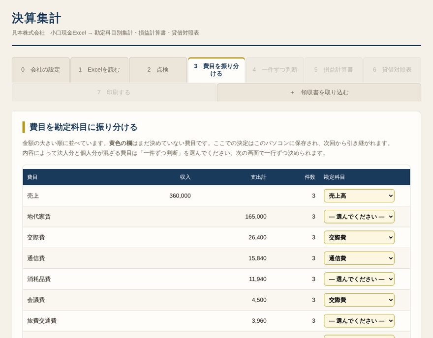
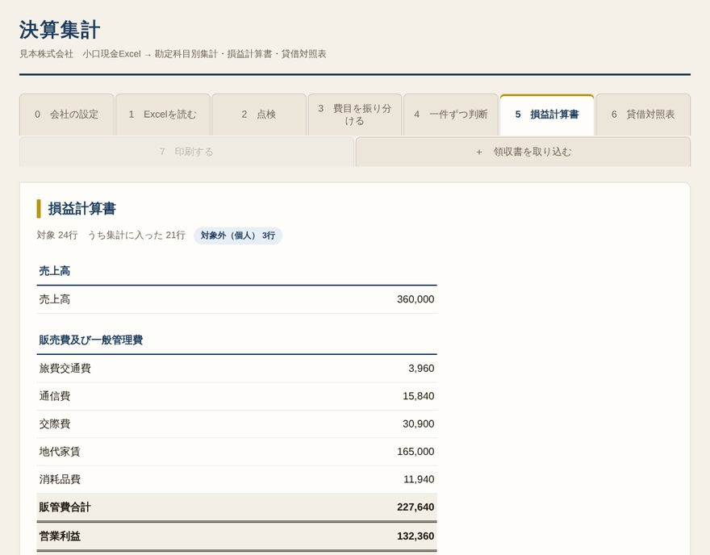

日昇リサーチの決算月は10月です。小さな会社で、帳簿は私が自分でつけ、申告書も自分で入力しています。日々の出入りは小口現金のExcelに書いてきました。ところが一年分が七百行を超えると、これを勘定科目ごとにまとめ、損益計算書と貸借対照表に仕立てるのが、毎年の大仕事になります。
そこで今年は、AIの電さん（Claude）と一緒に、Excelを放り込めば決算書の下ごしらえができる道具を作りました。名前はそのまま「決算集計」です。ブラウザで開くだけで動き、インストールも会員登録もいりません。同じように一人で経理をしている会社の方に使っていただければと思い、ご紹介します。
小口現金のExcelを読み込み、画面の順に進むだけで、決算に要る書類の下書きまでたどり着きます。
このほか、メールで届いた領収書や、AmazonなどのPDFの領収書から、日付・金額・支払先を読み取る機能も付けました。


この道具で一番大事にしたのは、最後に決めるのは人だ、という点です。勘定科目の候補は道具が示しますが、確定のボタンを押すまでは何も決まりません。10万円以上の行を含むまとまりは、一括で確定する対象から外し、必ず目で確かめるようにしました。
私は、申告書の入力も自分の手で行っています。人の手がどこかに残っていないと、安心できないからです。この道具は、その手前の下ごしらえと、数字の確かめを受け持ちます。電さんと私の間で決めてきた「電任」、つまり丸投げでも使い走りでもなく、信頼を前提に役目を分け合うという働き方を、そのまま形にしたものです。
もう一つの工夫は、Excelの一番右の列に「法人」か「個人」かを書いておけることです。何を買ったかは、買ったその日なら覚えています。決算のときに一年前を思い出すより、ずっと正確です。この列を埋めておくと、決算のときの判断の手間が大きく減ります。
読み込んだExcelの中身も、領収書の内容も、すべてお使いのパソコンのブラウザの中だけで処理します。会社名や残高、費目の振り分けは、そのパソコンのブラウザの中にだけ保存されます。道具のファイル自体には、会社の数字は一つも入っていません。
ネットにつながるのは、ExcelやPDFを読むための部品（公開されているプログラム）を最初に読み込むときだけです。保存した内容は、設定の画面からいつでも消せます。
10月27日、日野税務署の決算説明会に参加しました。説明を聞きながら、この道具と一行ずつ照らし合わせたところ、一か所、古い数字が残っていました。申告書への転記表で、交際費を損金にできる上限が年300万円になっていたのです。いまの中小法人の上限は、年800万円です。
その日のうちに電さんと直し、配られた冊子『会社の決算申告の実務』の計算式（800万円×月数÷12）と一致することを確かめて、公開中の道具に反映しました。説明会では、令和8年4月から少額減価償却資産の上限が30万円未満から40万円未満に上がったことなど、ほかにも手を入れたい点が見つかっています。決算の前後に、順に足していきます。
・法人向けです。個人事業主の青色申告決算書の様式には対応していません（仕訳と集計の部分は使えます）。
・まだ開発中です。令和8年10月期の決算を実際に処理しながら作っており、本番の申告を一度も通っていません。数字は必ずご自身で検算してください。
・税理士業務の代わりではありません。勘定科目の提案は目安で、申告の内容と最終的な判断は、お使いになる方の責任です。
・紙のレシートを撮影・スキャンしたPDFは読み取れません。手で入力してください。
・別表二・五・六など、帳簿から作れない書類は、前期の申告書を引き継いでください。
・減価償却や少額減価償却資産の扱いは、まだ入っていません。これから足します。
使い方は簡単です。
まだ小口現金をExcelでつけていない方のために、この道具に合わせた記入用のExcelも用意しました。費目と区分は一覧から選べ、日付を入れると曜日が入り、月の合計と区分の未記入の件数がいつも表示されます。銀行の入出金、借入金、年間の固定費のシートも入っています。
小さな会社の決算は、規模が小さいからこそ、すべてを一人で背負いがちです。税理士に頼むほどではない、けれど一年分の帳簿をまとめるのは骨が折れる。そんな方の机の上で、この道具が少しでも役に立てば嬉しく思います。
使ってみて、おかしな数字や、欲しい機能に気づかれたら、ぜひこのブログのコメントでお知らせください。10月決算の皆さま、締めまであと少しです。ご一緒に乗り切りましょう。
牧正人史先生が昭和三十三年に発見された姓名科学の体系を、デジタルの形で遺す仕事を続けています。
▶ 姓名科学の殿堂へ ▶ お名前を解析する